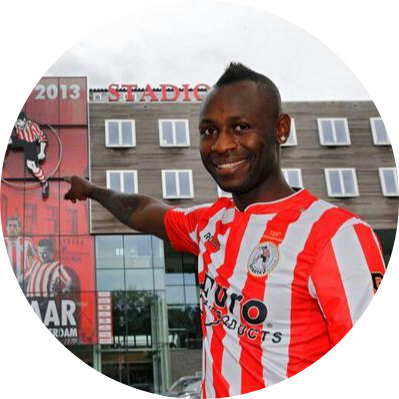

|  |
Cendrino MisidjanCendrino Bio, Ex-profvoetballer, Auto liefhebber, Leerling Full stack development en gek op mijn kids |
Op zijn vijfde kwam hij naar Nederland en groeide op in Culemborg waar hij op z'n twaalfde ging voetballen. Al snel kwam hij in de jeugd van RKC Waalwijk. Misidjan maakte zijn debuut in het betaalde voetbal op 24 augustus 2007 voor Stormvogels Telstar. In het seizoen 2009/10 speelde hij voor FC Omniworld.
In 2010 stapte hij over naar FC Oss, dat is gedegradeerd naar de Topklasse. Na het kampioenschap in de Zondag Topklasse, en daarmee de terugkeer in de Eerste Divisie, stapte Misidjan in de zomer van 2011 over naar Almere City FC dat door het faillissement van RBC Roosendaal net aan degradatie naar de Topklasse ontsnap was. Na een seizoen bij Go Ahead Eagles speelde hij in het seizoen 2013/14 bij Sparta Rotterdam. Begin 2014 werd hij een periode uit de selectie gezet.
In 2014 tekende hij voor twee seizoenen bij CSKA Sofia uit Bulgarije. Half december van dat jaar werd zijn contract ontbonden. Hij sloot zich in februari 2015 aan bij FC Emmen. Van de zomer tot december 2015 speelde hij op Cyprus voor Ermis Aradippou.In oktober 2016 sloot hij na een succesvolle stage aan de De Treffers, op dat moment actief in de Tweede divisie. Nadat hij zeven wedstrijden speelde voor de club, tekende Misidjan op 25 januari 2017 een contract voor een half jaar bij VVV-Venlo, op dat moment koploper in de Eerste divisie. In zijn verbintenis was een optie voor nog een seizoen opgenomen, maar die optie werd door de Venlose promovendus niet verlengd. Misidjan vervolgde zijn loopbaan bij FC Dordrecht. Daar liet hij per 1 januari 2018 zijn contract ontbinden.
Hierna zou hij in België voor FCV Dender EH gaan spelen, maar gaf toch de voorkeur aan een terugkeer bij De Treffers. Medio 2018 ging hij naar SV Spakenburg. Medio augustus 2019 verbond Misidjan zich na een proefperiode voor de derde keer aan De Treffers.| Datum | Werk |
|---|---|
| 2009-2020 | Gewerkt als (prof)voetballer bij verschillende clubs |
| voetballen | ⭐⭐⭐ |
| Gamen | ⭐⭐⭐⭐ |
| Programmeren | ⭐ |
| Mentaliteit | ⭐⭐⭐⭐⭐ |